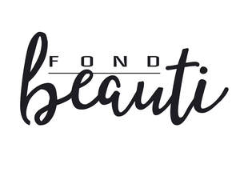

Trade Mark Journal No.2025/016 18 April 2025
UK00004183493 3 April 2025 (3,14,28)

- Class 3
- Cosmetic pencils; Pencils (Cosmetic -); Cosmetic eye pencils; Cosmetic pencils for cheeks; Pencils for cosmetic use; Temporary tattoo transfers for use as cosmetics; Temporary tattoos for cosmetic purposes; Removable tattoos for cosmetic purposes; Permanent waving lotions; Hair permanent treatments; Nail art stickers; Body art stickers; Nail glitter; Nail paint [cosmetics]; Nail polish pens; Make-up; Make-up kits; Makeup; Makeup setting sprays; Make-up pencils; Fingernail decals; Fingernail tips; Fingernail sculpturing overlays; Hair color; Hair color removers; Colour removers for the hair; Hair colour removers; Hair dye; Lipsticks; Eyeshadows; Lipstick; Blushers; Eyeliners; Lip balm; Lip balms; Lip balm [non-medicated]; Lip balms [non-medicated]; Non-medicated lip balms; Hand creams; Cosmetic hand creams; Hand lotions; Hand cream; Hand cleansers; Perfumes; Fragrances; Oils for perfumes and scents; Perfumery and fragrances; Perfume; Nail polish; Nail polish remover; Nail polish removers; Polish; Nail polish remover pens; Blusher; Face blusher; Eyeshadow; Eye-shadow; Blush; False nails; Nails (False -); False fingernails; False toenails; Adhesives for fixing false nails; Eye shadow; Eye shadows; Cosmetics in the form of eye shadow; Eyelid shadow; Eye makeup; Lip glosses; Lip gloss; Lip gloss palettes; Lip tints; Lip makeup; Cosmetic kits; Kits (Cosmetic -); Make-up palettes containing cosmetics; Cosmetics all for sale in kit form; Compacts containing make-up; Face paints; Face paint; Face oils; Face masks; Face glitter; Cosmetics for children; Colour cosmetics for children; Cosmetics for animals; Cosmetics; Skincare cosmetics; Hair cosmetics; Moisturisers [cosmetics]; Skin make-up; Cosmetics and cosmetic preparations; Facial creams [cosmetics]; Face and body glitter; Body glitter; Make-up for the face and body; Face and body lotions; Face and body masks.
- Class 14
- Necklaces; Choker necklaces; Necklaces [jewelry]; Necklaces [jewellery]; Silver-plated necklaces; Gold-plated necklaces; Pendants [jewelry]; Jewelry; Jewelry (Paste -) [costume jewelry]; Paste jewelry [costume jewelry]; Brooches [jewelry]; Jewelry brooches; Gems; Chalcedony used as gems; Precious and semi-precious gems; Olivine [gems]; Jewels; Jewellery; Brooches [jewellery]; Jewellery brooches; Jewellery, including imitation jewellery and plastic jewellery; Pendants [jewellery]; Rings [jewelry]; Rings being jewellery; Rings [jewellery]; Rings [jewellery, jewelry (Am.)]; Bracelets [jewelry]; Earrings; Jewelry clips for adapting pierced earrings to clip-on earrings; Silver-plated earrings; Hoop earrings; Pierced earrings; Bracelets; Bangle bracelets; Bracelets [jewellery]; Bead bracelets; Silver-plated bracelets; Ring bands [jewellery]; Brooches being jewelry; Diamond jewelry; Bracelets [jewellery, jewelry (Am.)]; Necklaces [jewellery, jewelry (Am.)]; Key rings and key chains, and charms therefor; Charms for key chains; Charms for key rings; Key rings; Key chains; Wooden bead bracelets; Bracelet charms; Silver bracelets; Jewellery rope chain for bracelets; Beads for making jewelry; Metal key chains; Key chains for use as jewelry; Key chains for use as jewellery; Retractable key chains; Key chains [trinkets or fobs]; Key charms [trinkets or fobs]; Key chains as jewellery [trinkets or fobs]; Key chains [split rings with trinket or decorative fob]; Key chains of precious metal; Key rings [trinkets or fobs]; Necklace charms; Charms; Charms [jewelry]; Jewelry charms; Charms for jewelry; Children's jewelry; Women's jewelry; Trinkets [jewellery, jewelry (Am.)]; Amberoid pendants being jewellery; Trinkets [jewelry]; Ornaments [jewellery]; Items of jewellery; Jewellery items; Costume jewellery; Jewellery products; Rings [jewellery] made of non-precious metal; Rings [jewellery] made of precious metal; Chains [jewellery, jewelry (Am.)]; Identification bracelets [jewelry]; Amulets [jewelry]; Jewelry boxes not of metal; Jewelry boxes, not of metal; Jewelry boxes, not of precious metal; Jewelry boxes of metal; Small jewelry boxes, not of precious metal; Jewellery for pets; Trinkets [jewellery]; Ornaments [jewellery, jewelry (Am.)]; Precious jewellery; Amulets being jewellery; Paste jewelry; Paste jewellery; Jewellery (Paste -); Paste jewellery [costume jewelry (Am.)]; Paste jewellery [costume jewelry [Am.]].
- Class 28
- Toy animals; Toys for animals; Toys and playthings for pet animals; Toys, games and playthings for pet animals; Toys for pet animals; Children's multiple activity toys; Children's multiple activity toy; Children's multiple activity tables [playthings]; Multiple activity toys for babies; Equipment sold as a unit for playing card games; Ornaments for Christmas trees, except lights, candles and confectionery; Christmas tree decorations; Christmas tree decorations and ornaments; Christmas tree ornaments; Decorations and ornaments for Christmas trees; Toy jewellery; Toy brooches; Toy furniture; Toy tableware; Toy figurines; Accessories for dolls; Toys; Toys, games, and playthings; Play mats incorporating infant toys [playthings]; Costumes being childrens playthings; Play mats for use with toy vehicles [playthings]; Play mats for use with toy vehicles; Clothing for toy figures; Costumes being children's playthings; Doll accessories; Table-top games; Tabletop basketball games; Tabletop games and gambling devices; Games; Miniatures for use in games; Playsets for dolls; Doll playsets; Dolls; Toy dolls; Toy playsets; Stuffed toy animals; Stuffed animals [toys]; Toy dogs; Toy birds; Motor driven toy animals; Toy figure playsets; Bobble-head dolls; Bobblehead dolls; Plush dolls; Kokeshi dolls; Toy artificial fingernails; Toy fingernails; Toy imitation cosmetics; Toy gum machines; Plastic toys; Party favors in the nature of small toys; Party favors in the nature of crackers; Novelty toys for parties; Paper party favors; Novelty noisemaker toys for parties; Drawing toys; Magnetic putty being toys; Magnetic levitation toy figures; Magnetic building blocks being toys; Toys made of metal; Parlor games; Parlour games; Arcade games; Mah-jongg games; Coin-operated games; Children's toys; Electronic activity toys; Children's playthings; Children's ride-on toy vehicles; Children's toy bicycles other than for transport; Toys in the nature of imitation foodstuffs; Imitation toilet preparations being toys; Imitation toilet articles being toys; Toy cosmetics [not usable]; Modeled plastic toy figurines; Toy chemistry sets; Toy sets; Toy gardening sets; Toy tea sets; Toy sewing sets; Toy hats; Miniature car models [toys or playthings]; Dolls' clothing accessories; Doll costumes; Model cars [toys or playthings]; Jewellery for dolls; Dolls' furniture accessories; Clothing for dolls; Doll clothing; Articles of clothing for toys; Sketching toys; Action figures [toys or playthings]; Puzzles [toys]; Bouncing toys; Sand toys.
Cheng Shu
Representative: DY CNUK Ltd